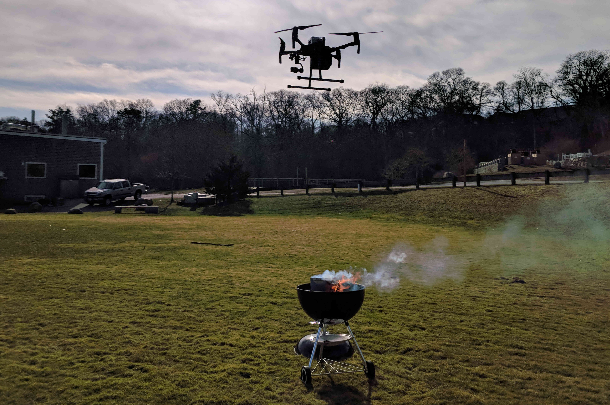

Hello! I am a PhD student in the Massachusetts Institute of Technology and Woods Hole Oceanographic Institution Joint Program (MIT-WHOI JP), in which I split my time between the MIT AeroAstro department and the WHOI Applied Ocean Physics and Engineering department. I work with the Robust Robotics Group led by Nicholas Roy (MIT) and the Chemical Sensors Laboratory led by Anna Michel (WHOI) on research at the intersection of artificial intelligence, machine learning, environmental science, and numerical modeling.
My research goal is to enable intelligent mobile scientific observatories for robust and autonomous long-term monitoring of complex, dynamic environments. I'm particularly motivated by geochemical contexts in which a robot may be tasked with mapping greenhouse gases or toxic chemicals in aquatic or atmospheric systems. My SM thesis presented a novel robotic decision-making framework for maximum-seeking in potentially transient environments. Through this work, I identified key challenges for designing a suitable autonomy system for monitoring spatiotemporal environments that I now address in my PhD work: data efficiency in learning, inference over high-dimensional states, and planning in spatiotemporal systems. Currently, my work is focused on developing a data-efficient probabilistic model to learn spatiotemporal dynamics from sparse robotic measurements.

I gratefully recognize the support of a NDSEG Fellowship and a Martin Family Society for Sustainability Fellowship for my studies, in addition to Oceanventures Funding for initial work on aerial geochemical monitoring.